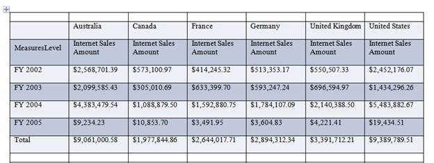

The OlapGrid control can be exported to a Word file using the following code:
|
[C#] // Export OLAP Grid data to Word. this.OlapGrid1.ExportToWord(); |
|
[VB] 'Export OLAP Grid data to Word. Me.OlapGrid1.ExportToWord() |
The OlapGrid supports the Word file customization using the QueryWordExportCellInfo event while exporting.
Refer to the code snippet below to add an event handler to customize the Word file.
|
[C#]
this.OlapGridControl1.QueryWordExportCellInfo += new EventHandler<WordExportCellInfoEventArgs>(OlapGridControl1_QueryWordExportCellInfo);
void OlapGridControl1_QueryWordExportCellInfo(object sender, WordExportCellInfoEventArgs e) { e.Cell.CellFormat.BackColor = Color.Pink; }
|
|
[VB]
AddHandler OlapGridControl1.QueryWordExportCellInfo, AddressOf OlapGridControl1_QueryWordExportCellInfo
Private Sub OlapGridControl1_QueryWordExportCellInfo(ByVal sender As Object, ByVal e As WordExportCellInfoEventArgs) e.Cell.CellFormat.BackColor = Color.Pink End Sub
|

Figure 31: OLAP Grid Data Exported to Word
The table allows breaks by default. This can be disabled by setting the AllowTableBreak property to false.
|
[C#]
// Export Grid Data to Word without Table Break. this.OlapGrid1.AllowTableBreak = false; |
|
[VB]
// Export Grid Data to Word without Table Break. Me.OlapGrid1.AllowTableBreak = False |
Table 17: Methods
|
Method
|
Description |
Parameters |
Type |
Return Type |
|
ExportToExcel () |
Exports Grid data to Excel. |
- |
Server side |
void |
|
ExportToWord () |
Exports Grid data to Word. |
- |
Server side |
void |